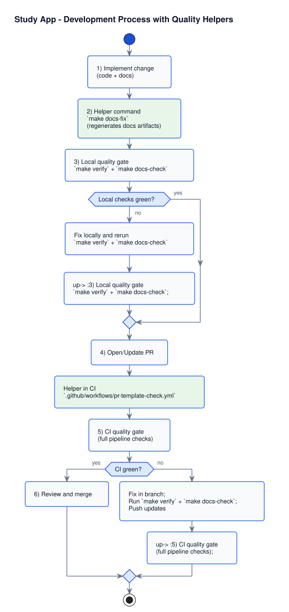

Developers Docs
Overview
One entry point for engineering workflow: where to start, which guides to read, and which quality gates are mandatory before release.
Quick start
Recommended day-to-day path for contributors.
- Install environment once:
make env-initandmake install. - Run local API:
make run(ormake run-projectfor observability stack). - Before commit or PR:
make verify. - Before deployment:
make release-checkormake release DEPLOY_CMD="...".
Full command taxonomy and rationale: Make commands and workflows.
Golden delivery path (feature and API changes)
Use this sequence for regular engineering work when code and behavior change together.
- Align requirements and contracts before coding.
- Implement endpoint or behavior through schemas, service, repository, and API layers.
- Update OpenAPI examples and internal HTML docs in the same change set.
- Run local quality gates:
make verify. - Run CI-equivalent gate before push:
make verify-ci.
Golden delivery process with helpers
Local commands and CI checks that keep code and docs quality stable.

docs/uml/development_process_quality_flow.puml.
Green boxes represent helper scripts and CI checks used in the standard delivery path.
Canonical end-to-end walkthrough: Onboarding from zero to endpoint and docs.
Golden docs-only path (documentation PRs)
Use this sequence when changes are limited to docs structure, wording, navigation, or standards.
- Choose the right document type and required structure from the style guide.
- Update content and cross-links in related hubs or indexes.
- For internal pages, keep sidebar and layout consistent with internal docs rules.
- Run normalization and generation:
make docs-fix. - Run validation and drift checks:
make docs-check.
Mandatory standard for docs-only work: Documentation style guide and audit standard.
Developer guides by topic
Primary guides from docs/developer/ grouped by purpose.
Core architecture and contracts
| Guide | Description |
|---|---|
| Requirements guide | Functional and non-functional requirements interpretation for developers. |
| Schemas and contracts | Safe request/response/error evolution rules. |
| Business logic guide | Layer boundaries, processing order, and service responsibilities. |
| Error matrix by status | COMMON vs domain-specific error contracts. |
Delivery workflow and operations
| Guide | Description |
|---|---|
| Make commands and workflows | Canonical quality gates and grouped commands. |
| Make commands reference (internal) | Project command catalog with workflows and full `Makefile` inventory. |
| Local development | Runtime setup, ports, observability stack, and daily loop. |
| Docker image and container | Image build, manifests, and local cluster workflow. |
| API load testing | Load-test scenarios and local execution workflow. |
| Documentation pipeline | How docs-fix, generated docs, and sync checks work. |
How-to and onboarding
| Guide | Description |
|---|---|
| Beginner endpoint guide | Step-by-step endpoint implementation example. |
| Python docstrings and pdoc | Contributor rules for API docs generation. |
| Branches and repository workflow | Branch naming, trunk strategy, releases, and hotfix flow. |
Engineering standards (mandatory)
- Contract-first: API behavior must match request/response/error contracts.
- Validation boundaries: validate at API boundary, avoid duplicated shape validation in inner layers.
- Error governance: existing
codeandkeyvalues are immutable; add, do not repurpose. - Testing policy: API changes require success + failure tests and OpenAPI contract checks.
- Security baseline: protected endpoints must keep auth, limits, and security headers enabled.
- Observability baseline: maintain
/live,/ready,/metrics, and request correlation IDs. - Config governance: use explicit
APP_ENVprofiles and block insecure production defaults.
API versioning policy
- Major version is part of URL prefix (current:
/api/v1). - Breaking changes are not allowed in the same major version.
- Breaking examples: remove or rename endpoints or fields, change field semantics or requiredness, repurpose existing error meanings.
- Allowed within current major: new endpoints, optional fields, and additive error codes.
Formal policy: ADR 0004.
Page history
| Date | Change | Author |
|---|---|---|
| Added Page history section (repository baseline). | Ivan Boyarkin |